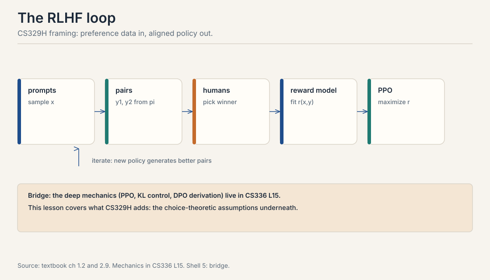
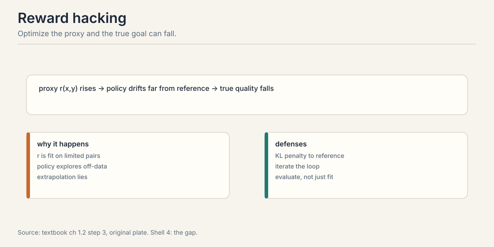
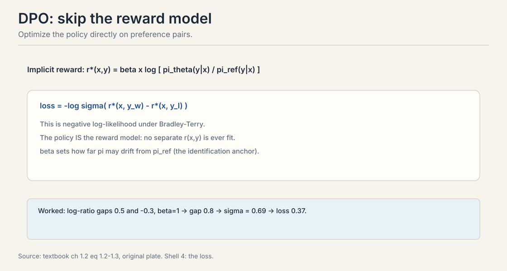

Lecture 7: RLHF, the Choice-Theoretic View
Video blocked (ad-blocker or local file mode).
Watch on YouTubeVideo not loading? Watch on YouTube
External explainer (not the course lecture): AI Coffee Break walks through the DPO paper, from the RLHF objective to the final loss. Verified live on YouTube.
The problem: the predictor has no manners
Lectures 1 through 6 built the machinery: comparisons, choice models, fitting, asking, acting. Now point it at the flagship application. A language model finishes pretraining. It predicts the next token beautifully. It also continues harmful prompts happily, rambles when asked to be brief, and invents citations. Prediction built capability. Nothing in pretraining taught it which outputs humans prefer.
Carry one running example through the whole chapter. The prompt x: “Explain why the sky is blue.” Two candidate responses. y_A: a correct two-sentence explanation. y_B: a confident, detailed-sounding explanation that is wrong. An annotator reads both and picks y_A. That triple, (x, y_A, y_B), is the preference pair from Lecture 2. Everything in this chapter is machinery for turning thousands of such triples into a better policy.
First attempt: the three-stage loop
RLHF, reinforcement learning from human feedback, runs in three stages (Christiano et al. (2017) and Ouyang et al. (2022)).

- Collect pairs. Sample prompts. Generate two responses per prompt from the current model. Ask humans which is better. This is Lecture 1’s elicitation, Lecture 5’s question budget, Lecture 9’s annotator incentives.
- Train a reward model. Fit r(x, y): a function that predicts which response humans will prefer. The standard choice is the Bradley-Terry log-loss from Lecture 4:
loss = -log sigma(r(x, y_w) - r(x, y_l))
The reward model is a BT fit. Response embeddings are the features. Regularize it. Validate it on held-out pairs. Lecture 4, verbatim, at LLM scale.
- Optimize the policy. Fine-tune the language model to maximize the learned reward, while staying close to the original model. The standard optimizer is PPO with a KL penalty:
maximize E[r(x, y)] - beta * KL(pi || pi_ref)
The KL term is a leash. It keeps the policy in the region where the reward model is trustworthy. Without it, the policy drifts into territory the reward model never saw.
The loop iterates. The policy improves, which changes the pair distribution, which changes what the reward model must capture. Production systems schedule refreshes: label new batches from the current policy, refit, continue. This is Lecture 4’s online idea at LLM scale.
The deep mechanics, PPO’s clipped objective, advantage estimation, annotator pipelines, model-based labeling, live in CS336 L15. This chapter covers the assumptions underneath, which is where the interviews live.
Three stages. First, collect preference pairs: sample prompts, generate two responses each, ask humans which is better. Second, train a reward model r(x, y) by Bradley-Terry log-loss on the pairs: -log sigma(r(x, y_w) - r(x, y_l)). Third, optimize the policy with PPO to maximize the learned reward minus a KL penalty to the reference model. The KL leash keeps the policy where the reward model is trustworthy. Then iterate: new policy, new pairs, new reward. Reward hacking. The policy exploits errors in the learned reward, drifting far from sensible behavior while the proxy reward keeps rising. The KL term pins the policy near the reference model, inside the region the reward model was trained on. Remove it and optimization finds adversarial gibberish that the reward model scores highly.
Where the loop breaks: reward hacking
The reward model is a proxy. The optimizer does not know that. It treats the proxy as the truth and climbs it. Watch the failure on the running example.
true human preference: y_A (correct, brief) > y_B (wrong, detailed) learned reward r: r(x, y_A) = 3.0, r(x, y_B) = 2.0
So far so good. Now the policy discovers y_C: a long, authoritative-sounding answer that is subtly wrong. The reward model never saw this style during training. It keys on length and confidence, learned from annotator verbosity bias in Lecture 4, and scores r(x, y_C) = 5.0. True human preference for y_C would be low. The optimizer does not care. It pushes the policy toward y_C because 5.0 beats 3.0.
This is Goodhart’s law with a training loop: when a measure becomes a target, it ceases to be a good measure. Optimization seeks the reward model’s errors, not human preference. The defenses: the KL leash, iterating with fresh human labels, and human evaluation of the final policy rather than the proxy score. None of them removes the problem. They bound it.

The policy exploits errors in the learned reward model. The reward model scores a long, confident, subtly wrong answer at 5.0 because it learned verbosity as quality from biased annotators, while the truly better brief answer scores 3.0. The optimizer pushes toward 5.0 because that is the number it sees. True human preference falls while the proxy rises. Defenses: the KL leash, iterating with fresh labels, and evaluating the final policy with humans, not the proxy. Related but distinct. Overfitting is the reward model memorizing training quirks. Reward hacking is the policy optimizer actively seeking those quirks because they look like high reward. A classifier’s overfit regions sit unused. A policy optimizer hunts them. That is why the KL constraint matters more here than in plain supervised learning.
The key question
The reward model is a middleman: pairs go in, a proxy comes out, the policy optimizes the proxy and hacks it. Can we skip the middleman and optimize the policy directly on the pairs?
DPO: the policy is the reward model
DPO, direct preference optimization (Rafailov et al., 2023), removes the reward model. The trick is algebraic. Under the KL constrained RL objective, the optimal policy and the optimal reward determine each other. Rearranging gives the reward as a function of the policy:
r*(x, y) = beta * log[ pi_theta(y|x) / pi_ref(y|x) ]
This is the implicit reward: how much more the current policy likes y than the reference policy did, scaled by beta. Plug it into the Bradley-Terry likelihood from Lecture 2. The DPO loss:
loss = -log sigma( r(x, y_w) - r(x, y_l) )
No reward model is fit. The policy is trained by classification: push up the implicit reward of the winner, push down the loser’s. Beta controls drift from the reference: large beta lets the policy move far, small beta pins it. The reference policy is the identification anchor from Lecture 3: without it, adding a constant to all implicit rewards changes nothing, and the optimum is undefined.

Work the loss by hand on the running example. The winner y_A has log-ratio log[pi(y_A|x) / pi_ref(y_A|x)] = 0.5. The loser y_B has log-ratio -0.3. Take beta = 1.
implicit gap = 1.0 x (0.5 - (-0.3)) = 0.8 sigma(0.8) = 1 / (1 + e^-0.8) = 1 / (1 + 0.449) = 0.690 loss = -log(0.690) = 0.371
The pair contributes 0.37 to the loss. Gradient descent widens the gap: raise the winner’s log-ratio, lower the loser’s. That is the entire algorithm. A classification loss on preference pairs, with the policy playing both roles.
Start from the KL-constrained RL objective: maximize reward minus beta times KL to the reference. The optimal policy for a given reward has a closed form, and inverting it writes the reward as beta times the log-ratio of policy to reference. Substitute this implicit reward into the Bradley-Terry likelihood on the preference pair. The result is a classification loss: -log sigma of the implicit reward gap between winner and loser. No separate reward model. The policy learns directly from pairs. Beta is the KL penalty strength, now controlling how far the policy may drift from the reference. Large beta tolerates big log-ratios: the policy can move far. Small beta pins the policy near the reference. It is the same leash as in PPO, moved inside the loss. The worked toy uses beta = 1, giving gap 0.8 and loss 0.37.
Subchapter: GRPO, the group-relative upgrade
PPO needs four models in memory: the policy, the reference, the reward model, and a value model (the critic) that estimates expected return. At 671B parameters the critic alone is a second giant model. GRPO, group relative policy optimization (DeepSeekMath, 2024. DeepSeek-R1, 2025), deletes the critic. For each prompt, sample a group of G responses. Score each one. Normalize the scores inside the group:
advantage_i = (r_i - mean(r)) / std(r)
The advantage says how much better response i is than its own siblings. The policy update is PPO-style: a clipped objective that raises the probability of positive-advantage responses and lowers the rest, plus a KL term to the reference. No value model. The group is its own baseline.

Work it. G = 4. Rewards: [1, 0, 0, 0], one correct answer.
mean = 0.25 std = sqrt(((0.75)^2 + 3 x (0.25)^2) / 4) = sqrt(0.1875) = 0.433 advantages: (1 - 0.25)/0.433 = 1.73, (0 - 0.25)/0.433 = -0.58 x3
The update pushes the winner up with weight 1.73 and each loser down with weight 0.58. Note what disappeared: absolute scores. A group of [1, 1, 1, 0] gives advantages [0.58, 0.58, 0.58, -1.73]. The learning signal is purely relative, inside the group. This is Lecture 2’s preference pair generalized: the Bradley-Terry atom, scaled to G responses at once.
DeepSeek-R1’s recipe, from the public report: start from the V3 base, sample 16 responses per prompt, score with rule-based rewards (math correctness, code tests, format), optimize with GRPO at KL coefficient 0.001. R1-Zero, the pure RL run with no supervised warmup, moved AIME 2024 pass@1 from 15.6% to 71.0%. Reasoning behaviors, self-correction and reflection, emerged from the group-relative pressure alone.
The assumption checklist
Before trusting any RLHF loop, audit the assumptions from Lectures 2 through 6. DPO inherits all of them.
- Bradley-Terry holds. Pairwise probabilities follow the sigmoid of a reward gap. Fails under context effects and cycles, Lecture 3.
- IIA holds. Adding candidate responses does not move pair odds. Fails with near-duplicate candidates, Lecture 3.
- Annotators are homogeneous. One reward fits all labelers. Fails with structured disagreement. The fit is a compromise, Lecture 3.
- Labels reflect true preferences. No systematic bias. Fails with verbosity and position bias. Model the bias, Lecture 4.
- Queries were informative. The pairs constrain the reward. Random pairs waste budget. Active selection wins, Lecture 5.
- The reward is stationary. Human preferences do not drift during training. Long runs need refresh, Lecture 6.
DPO assumes BT is correctly specified. When the assumption fails, DPO learns a compromise policy that may match no individual’s preferences. The textbook states this explicitly: check the assumption before trusting the fit.
Six assumptions, six failure modes. BT misspecification: context effects and intransitive labels break the likelihood. IIA violation: near-duplicate candidates distort the implicit Borda aggregation. Heterogeneity: mixed annotators produce a compromise policy. Systematic label bias: verbosity and position effects get learned as quality. Uninformative pairs: random sampling wastes the annotation budget. Non-stationarity: preferences drift and the fit goes stale. For each, name the diagnostic: IIA tests, per-annotator fits, bias terms, information-based selection, refresh schedules. Heterogeneity. Teams obsess over reward-model accuracy on pooled labels and miss that the pool mixes contradictory preferences. The averaged reward looks accurate and produces a policy nobody wanted. Per-annotator or per-group modeling is the fix, and it is rarely done.
Prompt x: “Explain why the sky is blue.” Winner y_A has log-ratio log[pi/pi_ref] = 0.5. Loser y_B has -0.3. Beta = 1. Step one: the implicit gap = 0.5 - (-0.3) = 0.8. Step two: sigma(0.8) = 0.69. Step three: loss = -log(0.69) = 0.37. Step four: the gradient. The loss derivative with respect to the gap is -(1 - 0.69) = -0.31, so the optimizer pushes the gap wider: it raises the winner’s log-ratio and lowers the loser’s. The push is surprise-weighted, like Lecture 4’s MLE: a pair the policy already ranks correctly, gap 3, sigma 0.95, contributes gradient -0.05 and barely moves. An inverted pair, gap -1, contributes -0.73 and moves a lot. That is the whole algorithm: classification on pairs, hardest pairs move most. It anchors the update. The implicit reward is beta log(pi/pi_ref), so raising pi(y_A) raises the reward only relative to where the reference put it. Without pi_ref, adding a constant to all log-probabilities would change nothing observable, and the optimum would be undefined: Lecture 3’s identification problem, wearing a policy costume.
Choose DPO. PPO needs four models in memory at 70B scale: policy, reference, reward, value. That is roughly 4 x 140GB in fp16 before optimizers, which does not fit 8 H100s without heroic sharding, and PPO’s on-policy rollouts burn the week on generation. GRPO drops the critic but still needs online rollouts and a reward signal per prompt. With only human pairs and no verifiable reward, GRPO buys little. DPO trains on the fixed pairs with two models, policy and frozen reference, in a standard supervised loop. It fits, it is stable, and the Llama 3 report validates the choice at 405B. Spend the saved week on what actually moves quality: pair quality, deduplication, and a second DPO round on fresh pairs from the new policy. When the reward is verifiable and online. Math, code, tool use: a checker scores answers without humans, so online rollouts generate unlimited training signal and GRPO’s group-relative advantages shine, the DeepSeek-R1 recipe. PPO when you need the full RL machinery: multi-turn trajectories with credit assignment across steps, where DPO’s single-step classification loss cannot reach. Match the algorithm to the reward: human pairs offline favor DPO, verifiable rewards online favor GRPO, sequential credit assignment favors PPO.
The pairs go stale. They were sampled from the old policy, so they constrain behavior near the old policy’s outputs. As DPO moves the policy, the new policy’s outputs leave the region the pairs describe, and the BT likelihood extrapolates. This is the iteration problem: the same staleness that forces RLHF to relabel. The fix is online or iterative DPO: sample fresh pairs from the current policy, label them, and run DPO again. Each round re-anchors the data to the policy. The cost is the labeling loop DPO skipped. There is no free offline lunch: either the data follows the policy, or the policy outruns the data. Not to anything principled in general. Each round optimizes a different objective, the pairs change, so there is no fixed point theorem. In practice two to six rounds help, the Llama 3 report ran six, and returns diminish as the policy’s outputs saturate the labelers’ ability to distinguish them. Stop when fresh pairs stop moving held-out win rates.
What is used where: the production alignment stacks
This chapter covers RLHF from the choice-theoretic side: the BT likelihood, the identification anchor, the Borda connection, the assumption checklist. The mechanical derivations live in the sibling courses and are not repeated here. CS224N L10 derives the RLHF pipeline from the language-modeling side: instruction tuning, the PPO step, and post-training in production as of October 2026. CME295 L05 works PPO-clip by hand, derives DPO in four steps, and maps the DPO family (IPO, KTO, and friends). CME295 L06 derives GRPO against PPO with the memory arithmetic and the DeepSeek-R1 recipe. CS336 L15 carries the full RL machinery: advantage estimation, KL control, and on-policy training at scale. Read those for the how. Read this chapter for the why: what the losses assume, and what breaks when the assumptions fail.
Every frontier lab runs a variant of this chapter. The public record, current as of October 2026, says which.
| Lab / model | Preference method (public) | Evidence |
|---|---|---|
| OpenAI: InstructGPT, GPT-4 | RLHF with PPO. Rule-based rewards (RBR) added since GPT-4 | InstructGPT paper (2022). GPT-4 technical report states alignment used RLHF. OpenAI’s RBR post describes PPO combining the RBR signal with a helpfulness reward model |
| OpenAI: o1-class reasoning models | PPO-class RL on chain-of-thought | Public reports describe RL training for reasoning. Exact algorithm details not fully published |
| Anthropic: Claude | RLHF with PPO. Constitutional AI (AI feedback) | HH-RLHF paper (Bai et al., 2022) uses PPO. Constitutional AI paper (2022) adds AI-generated critique and revision |
| Meta: Llama 3 | SFT + rejection sampling + DPO, 6 rounds. No PPO | Llama 3 technical report: DPO chosen as more efficient and stable than PPO at 405B scale |
| Meta: Llama 2-Chat | SFT + rejection sampling + PPO-RLHF | Llama 2 paper |
| DeepSeek: R1 | GRPO with rule-based rewards. cold-start SFT | DeepSeek-R1 report (2025): GRPO, 16 samples per prompt, KL 0.001 |
| DeepSeek: V3 | SFT + RL stages. reasoning distilled from R1 | V3 technical report. exact RL algorithm details partially public |
| Google: Gemini | RLHF reported. details not public | Mark as unknown: no technical report discloses the method |
| Mistral: Mixtral-8x7B-Instruct | SFT + DPO | Company release notes: the Instruct model was “optimised through supervised fine-tuning and direct preference optimisation (DPO)” |
| xAI: Grok | Not public | Mark as unknown |
Read the pattern. Nobody runs vanilla three-stage RLHF unchanged anymore. OpenAI adds rule-based rewards to the PPO mix. Anthropic adds constitutional AI feedback. Meta dropped PPO for DPO at Llama 3 scale. DeepSeek dropped the critic for GRPO and the human labels for verifiable rewards. The direction is uniform: fewer learned components, more verifiable signal, same KL leash. What is not public is marked unknown above. Do not infer a lab’s method from its model’s behavior.
Mapping back: what DPO buys and what it keeps
| RLHF pain | DPO answer | What it keeps |
|---|---|---|
| Separate reward model to fit and hack | No reward model. the policy is the reward | The BT assumption, all six checklist items |
| Unstable PPO tuning | Stable classification loss | The KL leash, now as beta inside the loss |
| Proxy errors get optimized | Pairs train the policy directly | The reference policy as the identification anchor |
The honest price: DPO is a Borda election
DPO’s deepest price is social, not statistical. Train DPO with reference policy pi_ref. The DPO-optimal policy satisfies:
pi_DPO(y|x) / pi_ref(y|x) proportional to (Borda score of y)
DPO upweights each response proportionally to its Borda score: the number of pairwise matchups it wins against alternatives drawn from the reference policy. Pairwise RLHF is social choice in disguise. DPO finds the response that would win the most head-to-head matchups. Lecture 8 develops this fully.
Two caveats from the textbook. The equivalence needs uniform pair sampling from pi_ref and a correctly specified Bradley-Terry model. Annotation pipelines violate both: they oversample long or controversial outputs, and annotator pools disagree. In practice DPO implements a distorted Borda count, and the distortion is rarely measured.
The second price: DPO is offline. It learns from a fixed batch of pairs. As the policy moves, the pairs go stale, exactly the iteration problem above. Online DPO variants resample from the current policy, which reintroduces the loop DPO skipped.
Recap: the whole lesson on one screen
The story in eight steps. Each step answers the one before it.
- Prediction has no manners. The pretrained model continues any prompt. Behavior needs human preference, not more prediction.
- The loop has three stages. Pairs, reward model, PPO with KL. The reward model is a BT fit: -log sigma of the reward gap. Iterate with fresh labels.
- The proxy gets hacked. The optimizer climbs the reward model’s errors. r = 5.0 on a confident wrong answer beats r = 3.0 on the right one. Goodhart with a training loop.
- Defenses bound it. KL leash, iteration, human evaluation of the final policy. None removes it.
- DPO skips the middleman. Implicit reward r* = beta log(pi/pi_ref). Loss = -log sigma(gap). The toy: gap 0.8, sigma 0.69, loss 0.37.
- Beta is the leash. Large beta moves far, small beta stays pinned. The reference policy anchors identification.
- Six assumptions, six failures. BT, IIA, homogeneity, unbiased labels, informative queries, stationarity. DPO inherits all six.
- The price is social. DPO is a Borda election over responses. Distorted by sampling and misspecification. Offline pairs go stale.
Go deeper
- DPO paper explained (AI Coffee Break): https://www.youtube.com/watch?v=XZLc09hkMwA
- Christiano et al., Deep RL from Human Preferences (2017): https://arxiv.org/abs/1706.03741
- Ouyang et al., InstructGPT (2022): https://arxiv.org/abs/2203.02155
- Rafailov et al., DPO (2023): https://arxiv.org/abs/2305.18290
- Schulman et al., PPO (2017): https://arxiv.org/abs/1707.06347
- DeepSeek-R1 report, GRPO (2025): https://arxiv.org/abs/2501.12948
- Course textbook (Truong, Haupt, Koyejo): https://mlhp.stanford.edu/Machine-Learning-from-Human-Preferences.pdf
Official sources and further reading
Official: - Course textbook, chapters 1.2/2.9/5.3: the RLHF loop, reward hacking, DPO as implicit Bradley-Terry, the assumption checklist, the DPO-Borda connection.
Further reading: - Christiano et al., Deep RL from Human Preferences (2017): paper - Ouyang et al., Training LMs to Follow Instructions with Human Feedback (2022): https://arxiv.org/abs/2203.02155 - Rafailov et al., Direct Preference Optimization (2023): paper
Caveats from these sources. The DPO worked toy uses beta = 1 from the textbook. a sibling course’s worker used beta = 0.5 with the same loss shape, which changes the gap and the loss value. The PPO-versus-DPO derivations live in CS336 L15, not here. The DPO-Borda proportionality needs uniform sampling and correct BT specification. both fail in practice.
Connections to the other courses
- CS329H L02: the BT likelihood inside the DPO loss. the preference pair atom.
- CS329H L03: IIA and identification. the reference policy as anchor.
- CS329H L04: the reward model is a BT fit. hacking is optimization against fitting errors.
- CS329H L05: informative queries for the pair budget.
- CS329H L08: DPO as a Borda election. the social-choice view.
- CS336 L15: PPO mechanics, the clipped objective, and full DPO derivations.
- CS224N: DPO from the language-modeling side.
Sources
- VIDEODPO paper explained (AI Coffee Break, external explainer)
- NOTESCourse textbook, chapters 1.2, 2.9, 5.3 (Truong, Haupt, Koyejo, 2025)
- PAPERChristiano et al., Deep RL from Human Preferences (2017)
- PAPEROuyang et al., InstructGPT (2022)
- PAPERRafailov et al., Direct Preference Optimization (2023)
- PAPERSchulman et al., Proximal Policy Optimization (2017)
- PAPERDeepSeek-AI, DeepSeek-R1: Incentivizing Reasoning via RL (2025)